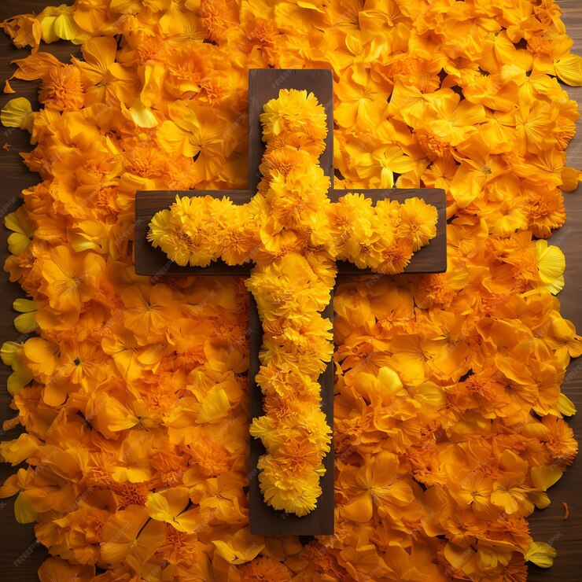
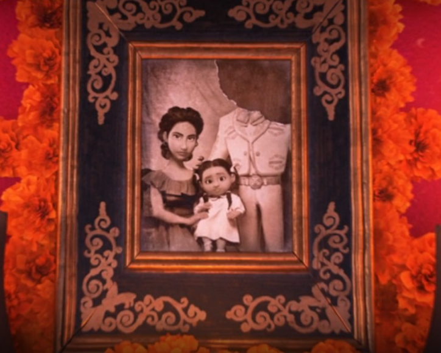

El Día de los Muertos tiene sus raíces en las tradiciones indígenas de México, especialmente entre los pueblos aztecas, que honraban a los muertos y creían que las almas continuaban viviendo de forma espiritual. Con la llegada de los colonizadores españoles en el siglo XVI, estas tradiciones se mezclaron con influencias católicas, resultando en celebraciones que se llevan a cabo el 1 y 2 de noviembre. Así se creó una forma de recordar y celebrar la vida de quienes ya han partido, con altares decorados, ofrendas y visitas a los cementerios.
- Alebrijes:
Este es un elemento que, aunque forma parte del folclore mexicano, originalmente no estaba relacionado con el Día de Los Muertos. Según la cultura popular, los alebrijes son criaturas fantásticas que mezclan diferentes partes de animales y actúan como guías espirituales. La versión más conocida de su creación es la del artesano Pedro Lineares. A causa de un extraño sueño, donde criaturas como un león con cabeza de perro y un burro con alas lo perseguían y gritaban “alebrijes”, despertó, inmediatamente se levantó de la cama y comenzó a realizar coloridos modelos de estos animales sobrenaturales. Con el tiempo, y a medida que tuvieron éxito, también fueron incluidos en algunos altares del Día de Muertos para que sirvieran de guías para los seres queridos fallecidos.
- Altar en casas:
En todo México encontrarás altares, ubicados en lugares públicos como hoteles e iglesias, así como en hogares que suelen tener sus puertas abiertas. Se celebran de diferentes maneras, pero, por lo general, incluyen ofrendas como agua, velas, calaveras de azúcar, pan de muerto, frutas y alimentos y bebidas que al difunto le gustaba comer y beber en las fotos de los difuntos homenajeados en el altar.
- Duración de la celebración:
Sin duda, el Día de Los Muertos es la festividad más importante de México. Las celebraciones comienzan entre el 25 y 28 de octubre y finalizan entre el 2 y 3 de noviembre. Y las fiestas empiezan desde el mediodía y duran hasta altas horas de la noche.
- Reconocimiento por la UNESCO:
El patrimonio cultural no son sólo monumentos y colecciones de objetos. La Organización de las Naciones Unidas para la Educación, la Ciencia y la Cultura (Unesco) afirma que el patrimonio cultural también incluye expresiones vivas de la cultura (las tradiciones) transmitidas de generación en generación. En 2008, la UNESCO reconoció la importancia del Día de los Muertos al agregar la festividad a su lista de Patrimonio Cultural Inmaterial de la Humanidad.
- Cómo se viste la gente:
Disfrazarse de esqueletos es parte de la tradición. Personas de todas las edades tienen sus rostros pintados artísticamente para que parezcan calaveras y, imitando la Calavera Catrina, la mayoría usa trajes, así como vestidos coloridos con flores.
- Carnaval:
La Ciudad de México organiza el “Carnaval de Calaveras” en Avenida Reforma. Siendo conocido por ser un evento animado y grandioso. Los colores intensos, trajes creativos, música animada y carrozas marcan la celebración mexicana. Además, también se caracteriza por la diversidad, ya que cada estado del país tiene sus propios ritmos, ritos y caracteres tradicionales.
❮
Voltar

NÍVEL 1
Cruz feita de flores, sementes ou frutas.

NÍVEL 2
Fotografia(s) da(s) pessoa(s) falecida(s) a quem o altar é dedicado.

NÍVEL 3
Frutas e também os pratos preferidos da pessoa falecida.
NÍVEL 4
Pan de muerto (pão dos mortos), um tipo de pão tradicional oferecido como alimento e consagração.
NÍVEL 5
Sal, que simboliza a purificação.
NÍVEL 6
Dedicado às almas do purgatório.
NÍVEL 7
Imagem do santo de devoção da família.
Significado de algunas flores
- La Catrina:
Es uno de los mayores símbolos del Día de Los Muertos desde su creación por el artista José Guadalupe Posada, “La Catrina” se convirtió en un símbolo del Día de Muertos en México. Maquillaje, vestuario, historias… Catrina representa a una mujer de la alta sociedad, que se convirtió en un gran personaje en esta época del año. Como resultado, se convirtió en una gran inspiración hasta el día de hoy.
- Flor Cempasuchi:
Cempasuchi es la flor oficial del Día de Los Muertos. Es conocido por sus pétalos amarillos y naranjas. En esta época del año se difunde por todas partes, en jarrones, altares, arcos de flores y todo tipo de decoración. Esto sucede porque en la tradición mexicana, esta flor se utiliza para guiar a las almas de regreso a sus altares.
Comidas tipicas
En el Día de los Muertos, la gente en México come comidas tradicionales como pan de muerto, guacamole, mole, tamales, enchiladas y bebidas como tequila o mezcal.
- Pan de muerto: Un pan dulce con forma circular que representa el ciclo de la vida y la muerte. Se decora con azúcar, ajonjolí, canelillas, y se puede rellenar de chocolate, nueces o calaveritas.
- Pozole blanco: Un caldo espeso a base de maíz, carne de cerdo o pollo, adornado con rábanos, lechuga, orégano y chiles.
- Tamales: Un alimento popular que se come durante las noches de celebración. Los tamales vienen en diferentes formas y sabores, y generalmente consisten en un relleno envuelto con masa dentro de una hoja de maíz.
- Dulce de calabaza: Se puede poner en las ofrendas para los difuntos.
- Atole: Se puede poner en las ofrendas para los difuntos.
- Chocolate de agua: La tradición prehispánica dice que los invitados tomaban chocolate preparado con el agua que usaba el difunto para bañarse.
Otras comidas típicas del Día de los Muertos son:
Mucbipollo, Dulce de Alfeñique, Café de olla, Frutas de temporada, Calaveritas de azúcar y Mole.
Una referencia: Coco
O filme Viva – A Vida é uma Festa, cujo o nome original é "Coco", produzido pela Disney/Pixar, se inspira fortemente na cultura do Dia dos Mortos, e capta a essência desse dia, destacando temas como a família, a memória, a celebração da vida e os antepassados.
A história, se passa no México, é centrada em torno de um jovem garoto de 12 anos chamado Miguel, apaixonado por música e sonha em se tornar um grande músico, apesar do fato de que sua família odeia música. O trauma familiar que aconteceu muitos anos atrás fez com que a música fosse estritamente proibida dentro de casa. Convincente de que seu coração lhe diz para se tornar um grande guitarrista, Miguel encontra-se magicamente transportado para o vibrante Mundo dos Mortos no Dia dos Mortos.
No entanto, após ser transportado, ele encontra seus antepassados e se torna amigo do bondoso esqueleto, Héctor, que o leva numa viagem para descobrir a verdadeira história de sua família e esperança para ser abençoado ao voltar ao mundo dos vivos.
O filme traz uma respeitosa e confortante representação da cultura mexicana, e é indicado para todas as idades e origens, sendo assim uma ótima homenagem para essa celebração tão importante e emocionante do México.
El día de Muertos en Brasil
El día de muertos en Brasil se llama Día de Todos los Difuntos, que también se celebra pero, a diferencia de como se celebra en México, no hay grandes fiestas y celebraciones. En esta fecha muchas personas dedican su tiempo a recordar la memoria de los muertos o seres queridos fallecidos, visitando tumbas y sepulcros, generalmente regalándoles flores o encendiendo velas para orar en cementerios o templos religiosos.
Este día es sumamente especial para los católicos que siguen la doctrina de la Iglesia Católica, que dice a los fieles que la mayoría de los muertos son enviados al purgatorio y se someten al proceso de purificación, por lo que se requieren oraciones y misas en su nombre.
La fecha del Día de los Difuntos es oficialmente el 2 de noviembre, en la mayoría de los países occidentales.
Su origen se remonta a los tiempos del cristianismo primitivo bajo las ruinas del Imperio Romano, donde los cristianos rezaban por los muertos y mártires específicos donde eran constantemente enterrados en catacumbas subterráneas de la ciudad de Roma.
Millones de personas honran la memoria de sus seres queridos con las tradicionales visitas a los cementerios, donde colocan flores y velas como gestos de respeto y fe, acompañados de oraciones y cantos.


.png)
.png)